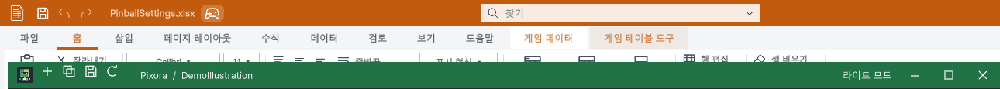

Tracefolio REPORTS & ISSUES
Tracefolio REPORTS & ISSUESPixora와 DataTable 교차 선택 시 직전 창이 기본 창 뒤로 밀리는 문제
해결하단 창 목록의 실제 클릭에서 재현했습니다. 선택 창만 복원하는 기존 정책을 유지하면서 직전의 앞쪽 제품 창을 보존해 양방향 전환·최소화·복원을 검증했습니다.
작업 결과
실제 재현·수정·실행 검증과 통합 브랜치 푸시를 완료했습니다. 종료처럼 보였던 창은 살아 있었으며 기본 창 뒤로 밀리는 상태였습니다. 수정 후 같은 클릭에서 두 제품이 기본 창 앞에 유지됩니다.
변경 내용
재현 조건
Windows · Unity 6000.0.83f1 · 동일 TurnRoom 프로젝트에 DataTable과 Pixora 설치
재현 순서
두 제품 창이 기본 창 앞에 있는 상태에서 하단 공통 창 목록의 다른 제품 항목을 실제 클릭했습니다. 포커스 보완을 끈 기준 모드와 켠 모드에서 같은 클릭과 네이티브 순서를 비교했습니다.
기대 동작
선택한 제품에 포커스가 가며 직전에 앞에 있던 다른 제품 창이 기본 창에 가려지지 않습니다. 최소화하거나 원래 뒤에 둔 무관한 창을 일괄 복원하지 않습니다.
실제 동작
기준 모드에서 Pixora → DataTable 클릭 후 순서가 DataTable → Unity 기본 창 → Pixora가 됐습니다. 세 문서의 객체·ID·핸들은 유지됐고 visible=true, minimized=false였습니다.
원인
하단 목록 클릭 중 기본 창이 먼저 전면으로 올라온 뒤 선택 문서만 활성화하는 경로에서, 직전의 다른 제품 창을 앞쪽에 유지하는 공통 포커스 인계 처리가 없었습니다. 이를 실제 Win32 순서와 동일 클릭 A/B 검증으로 확인했습니다. 앞선 치수·컴파일·예제 검증에는 이 실제 교차 클릭 경로가 빠져 있었습니다.
적용 내용
선택 계약 IWindowFocusHost와 공통 WindowFocus 관찰을 추가했습니다. 직접 교차 전환 직전에 실제 전면이었고 기본 창 앞에 있던 직전 제품 창만 선택 창 바로 뒤로 배치합니다. 새 창을 Focus/Show하거나 모든 문서를 끌어올리지 않습니다. 숨김·최소화·원래 뒤에 있던 창, 동일 제품 전환, 기본 창·다른 앱을 명시적으로 선택한 경우는 제외합니다. 기존 IWindowHost 계약은 유지합니다.
과거 사례와 대조했습니다.
| 과거 사례 | 당시 원인·수정 | 이번 수정에서 보존한 점 |
|---|---|---|
| 미리보기 클릭 복원 | 임시 소유권 정리가 복원 창을 다시 숨길 수 있어 커밋 전에 소유권을 분리 | 미리보기 소유권 코드에 새 지연 복원·전체 숨김을 넣지 않음 |
| 기본 창 클릭 후 포커스 복귀 | delayCall 복원이 늦게 전경을 되가져가므로 동기 처리로 변경 | 새 delayCall·SetForegroundWindow를 인계 보완에 사용하지 않음 |
| 독립 복원·최소화 | 모든 동료 창을 올리거나 소유 창이 함께 숨는 문제 | 선택 문서 복원 유지, 방금 앞에 있었던 다른 제품 한 개만 순서 보존 |
검증
실제 하단 항목을 클릭했습니다. 기준 모드: DataTable → 기본 창 → Pixora. 수정 모드: DataTable → Pixora → 기본 창. 반대 방향도 Pixora → DataTable → 기본 창을 확인했습니다. 선택 창이 전경을 유지하고 문서 ID·핸들이 바뀌지 않았습니다. 무관한 세 번째 DataTable 문서는 원래 뒤쪽에 남았습니다.
DataTable 제목줄 최소화와 하단 복원을 실제로 실행했습니다. 대상만 숨겨지고 Pixora는 유지됐으며, 동일 문서 객체로 복원해 두 창이 앞쪽에 남았습니다. 검증용 배치를 원래 모니터·좌표로 되돌린 후, 진단 요청 없이 다시 클릭해 같은 결과를 확인했습니다. 사용자 문서를 저장하거나 닫지 않았습니다.
실제 Unity의 포커스·메뉴 38개 검사와 과거 최소화·미리보기·독립 복원 151개 검사를 통과했습니다. 샘플 제외 구성의 기존 9개 검사도 통과했습니다. 임시 설치 프로브 소스와 요청 파일은 제거했습니다. 원시 세션 로그·윈도우 식별자·핸들은 게시하지 않았습니다.

실제 실행 화면입니다. 포인터가 첫 모니터로 제한돼 검증 중 두 창을 잠시 그곳에 배치했으며 촬영 후 원래 위치로 복원했습니다. 재현 그림이나 생성 이미지가 아닙니다. 1290×115, PNG 19,184바이트 → 무손실 WebP 11,340바이트, 픽셀 일치를 확인했습니다.
네이티브 결과 요약 · 정책·메뉴 검사 · 이미지 압축 검증
남은 사항
현재 Windows·Unity 6000.0.83f1의 해당 실제 전환 경로를 검증했습니다. 다른 운영체제·Unity 버전과 아홉 언어의 모든 창 배치를 시각 검증한 것은 아닙니다. DataTable 전체 가이드 캡처/소스 해시 검사는 기존 누적분과 이번 수정분의 미갱신 206건이 남아 실패합니다. 기존 캡처 해시는 임의 갱신하지 않았습니다. 이번 보고서의 실제 화면 이미지는 새로 캡처했습니다.
작업 시간
- 제안 시간: 20–40분. 상단 TurnRoom 메뉴 추가는 진행 중 요청됐습니다.
- 실제로 완료된 시간: 공동 작업 57분 50초. 시작 2026-10-30 02:40:43 KST, 구현·검증·프로젝트 푸시 완료 2026-10-30 03:38:33 KST. 보고서 생성·배포 시간은 별도이며 최종 채팅에 전체 소요 시간을 기록합니다.
- XERJ: 사용 — Tools/Search/Xerj.ps1 Status와 OnLostFocus 검색을 실행하고 현재 창 코드와 과거 보고서를 대조했습니다. 메뉴 속성·보고서 원문·Win32 관찰은 rg와 직접 실행으로 확인했습니다.